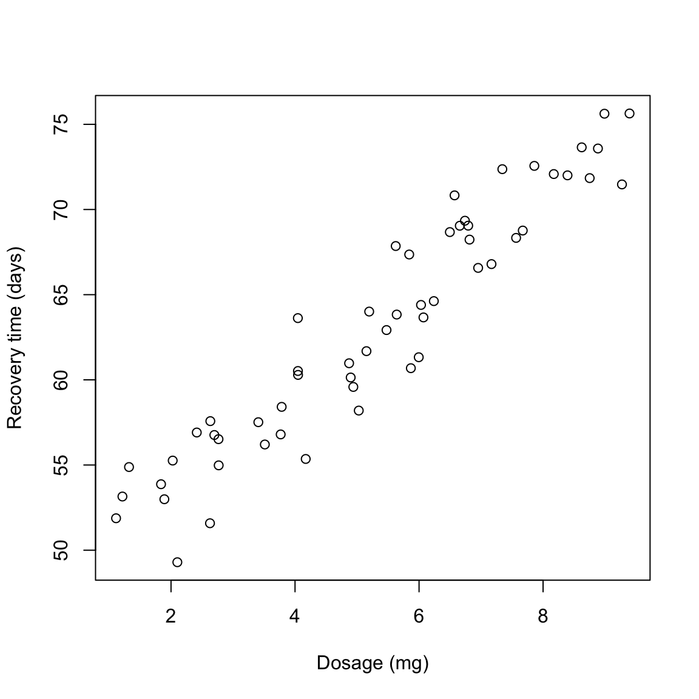
Introduction to linear models
We will learn
- what are linear models
- how to estimate model parameters
- hypothesis testing on linear regression
- evaluating how well model fits the data
- model assumptions
- linear model selection and regularization
- GLM with logistic regression
What Does A Linear Regression Give us
Single numerical outcome:
Weight, Gene Expression, Methylation Beta Values, …
Weight, Gene Expression, Methylation Beta Values, …
Numerical or categorical predictors:
Height, Disease status, BMI, Glucose levels …
Height, Disease status, BMI, Glucose levels …
Model
Is there any statistically meaningful relationship
between the outcome and any variables?
between the outcome and any variables?
How strong is the relationship?
Come up with likely outcome based on new variables (prediction).
What Does A Linear Regression Give us
Single numerical outcome:
Weight
Weight
Numerical or categorical predictors:
Height, Gender
Height, Gender
Model
Relationship:
Does Height affect Weight?
Do different genders influence weight?
Does Height affect Weight?
Do different genders influence weight?
Relative magnitude:
How much does weight increase if a female grows taller by 2cm?
How much does weight increase if a female grows taller by 2cm?
Prediction:
What's the weight of a male with a height of 3 meters?
What's the weight of a male with a height of 3 meters?
Simple example
We administered Drug X at increasing weight-based doses (mg/kg) to evaluate its effect on recovery time in a controlled experimental setting.
Is there any relationship between dosage (mg) and recovery time (days)?
\(Recovery\ time = dosage\)
If recovery time always increases at the same rate as dosage, we might guess:
\(Recovery\ time = dosage \times \textbf{some effect}\)
For example:
\(Recovery\ time = dosage \times \textbf{3}\)
\(Recovery\ time = \textbf{baseline} + dosage \times \textbf{3}\)
Simple example - prediction
If we use this form now, will it predict recovery time exactly for every person?
\(Recovery\ time = \textbf{baseline} + dosage \times \textbf{some effect}\)
Simple example - prediction
If we use this form now, will it predict recovery time exactly for every person?
\(Predicted Recovery\ time = \textbf{47.84} + dosage \times \textbf{2.88}\)

Simple example - prediction
If we use this form now, will it predict recovery time exactly for every person?
\[ \begin{aligned} \text{Recovery Time} &= \color{blue}{\mathbf{47.84} + \text{dosage}} \times \mathbf{2.88} \\ &+ \color{red}{\fbox{error}} \end{aligned} \]
\[\text{Recovery time}_i = \textbf{baseline} + dosage_i \times \\\textbf{effect} + \textbf{error}_i\]
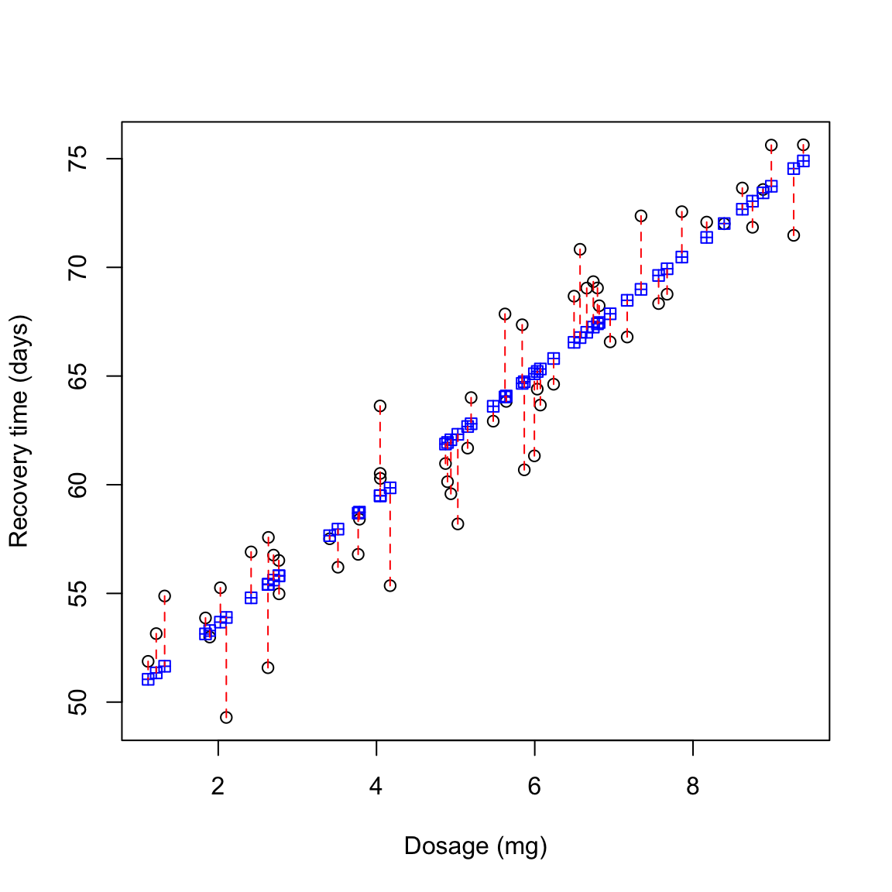
Simple example - prediction
If we use this form now, will it predict recovery time exactly for every person?
\[ \begin{aligned} \text{Recovery Time} &= \color{blue}{\mathbf{47.84} + \text{dosage}} \times \mathbf{2.88} \\ &+ \color{red}{\fbox{error}} \end{aligned} \]
| dosage | recovery | predicted | error |
|---|---|---|---|
| 1.322746 | 54.88094 | 51.64948 | 3.231466 |
| 5.195825 | 64.00759 | 62.80361 | 1.203978 |

Simple example - deciding the baseline and effect size
How do we decide on the baseline and the effect
\[\text{Recovery time}_i = \textbf{baseline} + dosage_i \times \\\textbf{effect} + \color{red}{\textbf{error}_i}\] We want to have lowest error for each individual!
| dosage | recovery | predicted | error |
|---|---|---|---|
| 1.322746 | 54.88094 | 51.64948 | 3.231466 |
| 5.195825 | 64.00759 | 62.80361 | 1.203978 |

Simple example - deciding the baseline and effect size
How do we decide on the baseline and the effect
\[\text{Recovery time}_i = \textbf{47.84} + dosage_i \times \\\textbf{1.5} + {\textbf{error}_i}\]
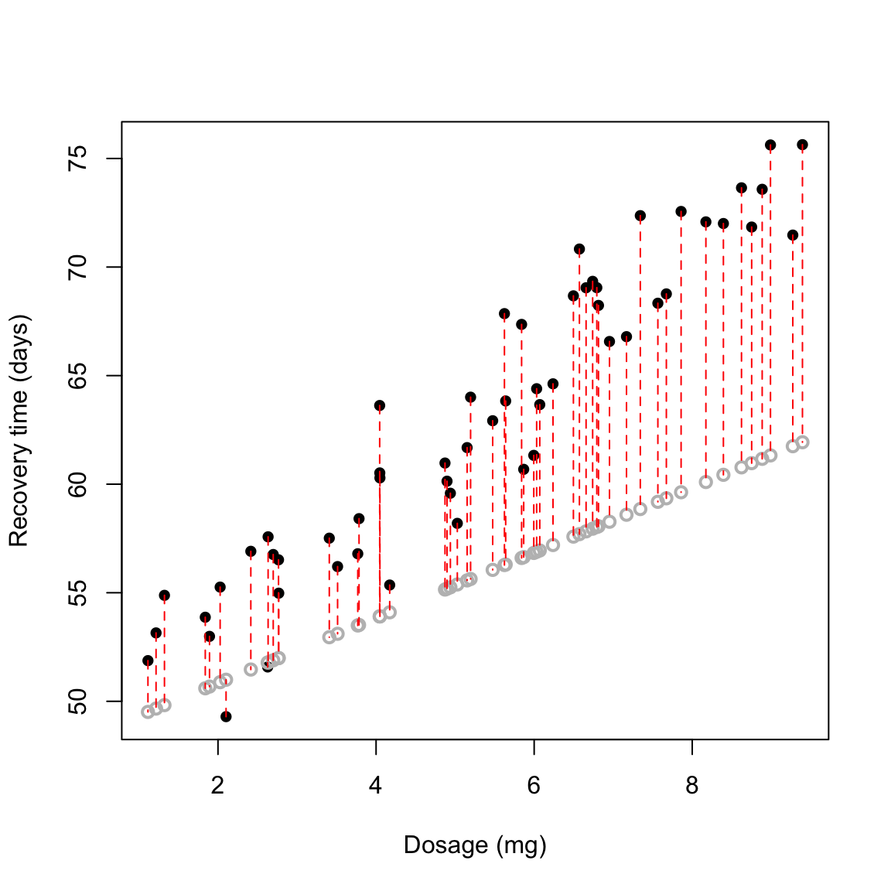
Simple example - deciding the baseline and effect size
How do we decide on the baseline and the effect
\[\text{Recovery time}_i = \textbf{47.84} + dosage_i \times \\\textbf{4.5} + {\textbf{error}_i}\]
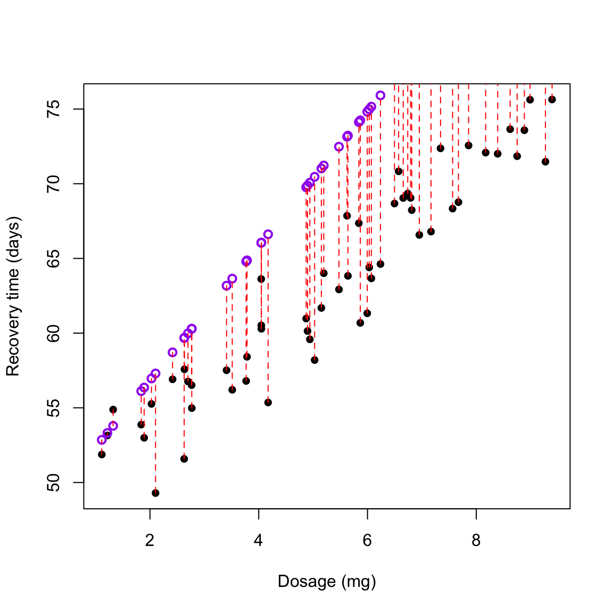
Simple example - deciding the baseline and effect size
How do we decide on the baseline and the effect \[\text{Recovery time}_i = \textbf{47.84} + dosage_i \times \\\textbf{2.8} + {\textbf{error}_i}\]
- \({\textbf{error}^2_1}+{\textbf{error}^2_2}+{\textbf{error}^2_3}+...+{\textbf{error}^2_n}\)
- \(\text{error}_i = \text{Recovery time}_i - baseline + dosage_i \times \\ \text{effect}\)
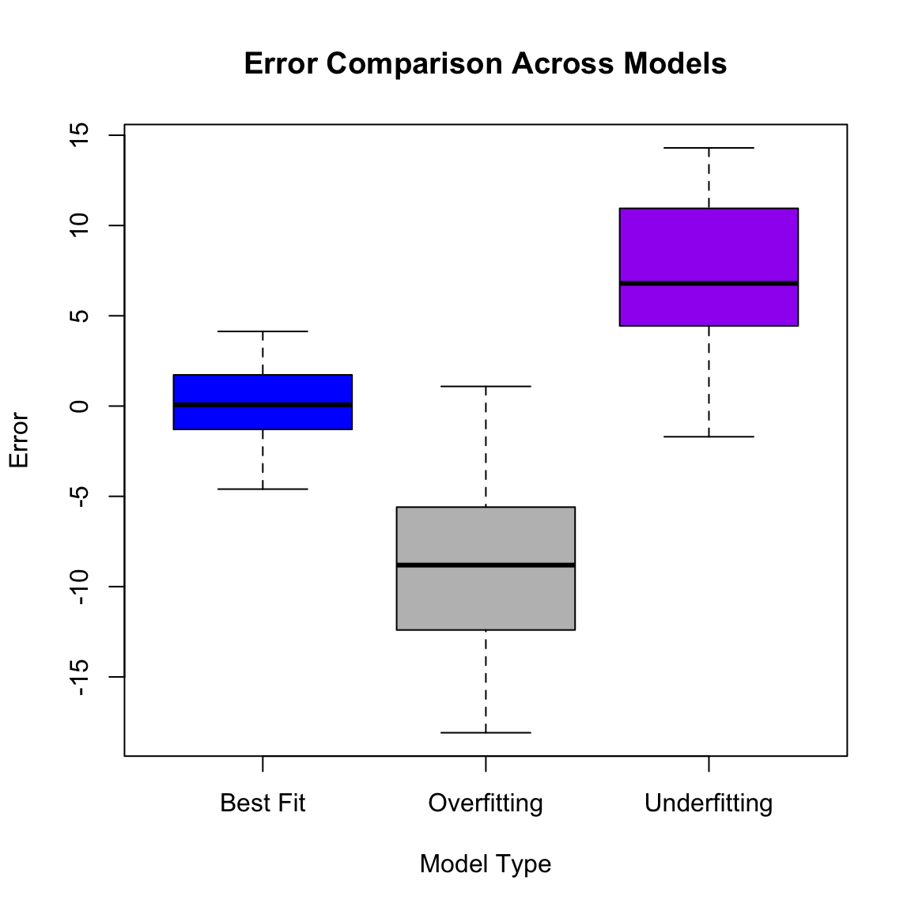
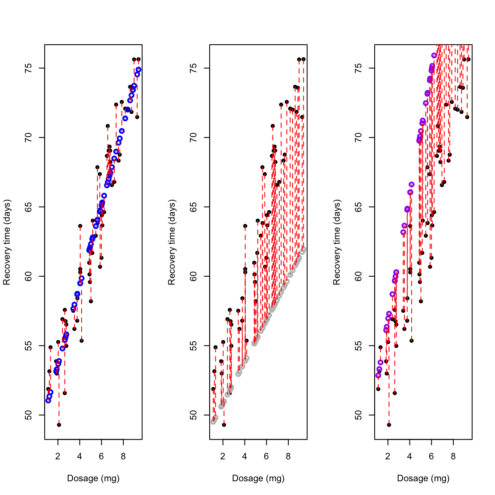
What if we have more than one predictor
We believe that the effects are added together
\[ \text{Recovery time}_i = \textbf{baseline} + dosage_i \times \\\textbf{effect}_1 + dosage2 \times \textbf{effect}_2+{\textbf{error}_i} \]
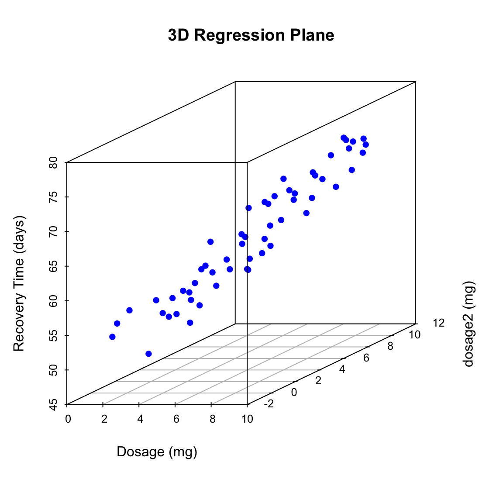
More formal definitation
If we want to have a little bit more formal definition:
- baseline is called intercept and is shown by \(\alpha\)
- effects are called coefficients and are shown by \(\beta\)
- the errors are called residuals and are shown by \(\epsilon\)
So our model becomes:
- \[Y_i = \alpha + \beta \cdot x_i + \epsilon_i \qquad(1)\] where:
- \(x\): is called: exposure variable, explanatory variable, independent variable, predictor, covariate
- \(y\): is called: response, outcome, dependent variable
The Line: Slope and Intercept
- The regression model defines a line.
- This line has two important parts:
- Intercept (\(\alpha\)): Where the line crosses the y-axis (baseline when \(x=0\))
- Slope (\(\beta\)): How much \(y\) changes for a one-unit increase in \(x\)
- The formal model is: \[Y_i = \alpha + \beta \cdot x_i + \epsilon_i\]
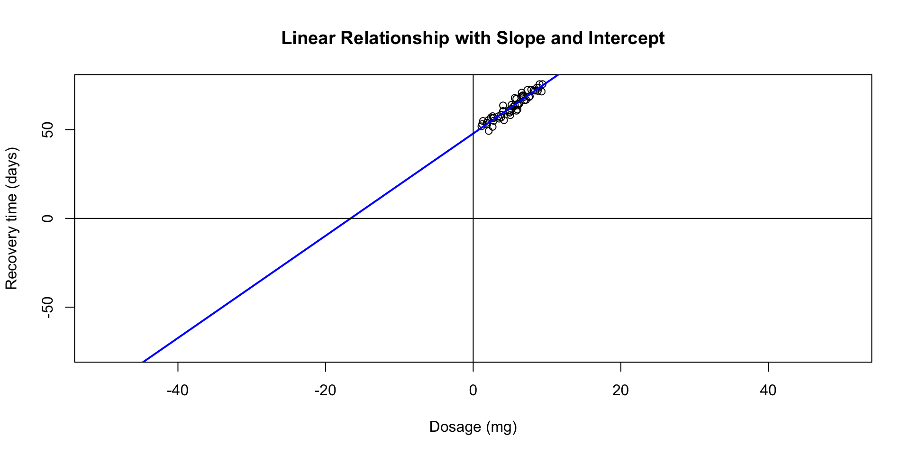
Least squares
- in the above example, the values of \(\alpha\) and \(\beta\) have just appeared
- in practice, \(\alpha\) and \(\beta\) values are unknown and we use data to estimate these coefficients, noting the estimates with a hat, \(\hat{\alpha}\) and \(\hat{\beta}\)
- least squares is one of the methods of parameters estimation, i.e. finding \(\hat{\alpha}\) and \(\hat{\beta}\)
Least squares
minimizing RSS (fitting the model)
Let \(\hat{y_i}=\hat{\alpha} + \hat{\beta}x_i\) be the prediction \(y_i\) based on the \(i\)-th value of \(x\):
- Then \(\epsilon_i = y_i - \hat{y_i}\) represents the \(i\)-th residual, i.e. the difference between the \(i\)-th observed response value and the \(i\)-th response value that is predicted by the linear model
- RSS, the residual sum of squares is defined as: \[RSS = \epsilon_1^2 + \epsilon_2^2 + \dots + \epsilon_n^2\] or equivalently as: \[RSS=(y_1-\hat{\alpha}-\hat{\beta}x_1)^2+(y_2-\hat{\alpha}-\hat{\beta}x_2)^2\\ +...+(y_n-\hat{\alpha}-\hat{\beta}x_n)^2\]
- the least squares approach chooses \(\hat{\alpha}\) and \(\hat{\beta}\) to minimize the RSS.
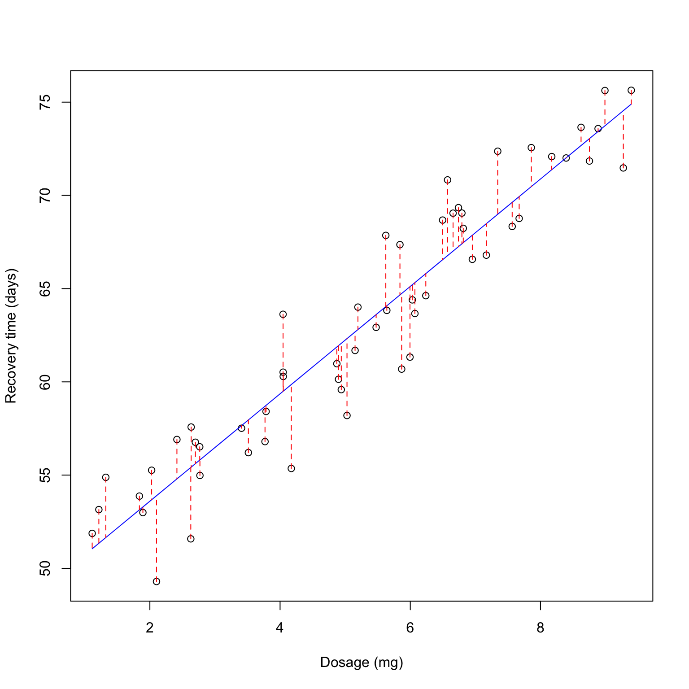
Common cases
Understand common models
- There are a large number of simple and complex models that can be fitted using linear models
- We will have a look at a few examples:
- Simple regression using a single continuous predictor
- Simple regression using a single categorical predictor
- Multiple regression using two continuous predictors
- Multiple regression using one continuous predictor and one categorical predictor
- Multiple regression using two categorical predictors
- Multiple regression interaction of various predictors
Simple regression using a single continuous predictor
- We have only a single continuous predictor
- The model we fit is: \[Y_i = \alpha + \beta \cdot x_i + \epsilon_i\]
- Intercept (\(\alpha\)): When dosage is 0 mg, the predicted recovery time is 47.84 days.
- Slope (\(\beta\)): For each additional mg of dosage, the recovery time increases by 2.88 days on average.

Simple regression using a single categorical predictor
- We have only a single categorical predictor.
- Depending on how many levels the predictor has, R will create dummy variables.
- In this example, the categorical variable treatment has two levels: A and B.
- R automatically uses the first level alphabetically (here: A) as the reference level.
- The model we fit is:
\[Y_i = \alpha + \beta_1 \cdot \text{B}_i + \epsilon_i\]
where:- \(\text{B}_i = 1\) if treatment is B, 0 otherwise
Interpretation of coefficients:
- Intercept (66.75): The predicted recovery time for treatment A (reference group) is 66.75 days.
- treatment B (-78.27): Treatment B is associated with -78.27 days shorter recovery time compared to A.
Multiple regression using two continuous predictors
- In this example, we model recovery time using two continuous predictors: dosage and dosage2.
- The model we fit is:
\[Y_i = \alpha + \beta_1 \cdot \text{dosage}_i + \beta_2 \cdot \text{dosage2}_i + \epsilon_i\] - This model fits a regression plane in 3D space.
Interpretation of coefficients:
- Intercept (49.85): Predicted recovery time when both predictors are 0.
- dosage (3.08): Effect of dosage, controlling for dosage2
- dosage2 (0.0041): Effect of dosage2, controlling for dosage.
Multiple regression using one continuous predictor and one categorical predictor
- In this example, we model recovery time using:
- One continuous predictor: dosage
- One categorical predictor: treatment (with levels A and B)
- R automatically creates dummy variables for treatment, using A as the reference group.
- The model we fit is:
\[Y_i = \alpha + \beta_1 \cdot \text{dosage}_i + \beta_2 \cdot \text{B}_i + \epsilon_i\]
where:- \(\text{B}_i = 1\) if treatment is B, 0 otherwise
Interpretation of coefficients:
- Intercept (63.28):
Predicted recovery time for a person in treatment group A with dosage = 0. - dosage (0.63):
For each additional mg of dosage, recovery time increases by 0.63 days, controlling for treatment group. - treatmentB (-78.41):
Individuals in group B recover -78.41 days faster than those in group A (reference), at the same dosage.
Multiple regression using two categorical predictors
- In this example, we model recovery time using:
- Two categorical predictors: treatment (levels A and B) and doctor (levels 1 and 2)
- R automatically creates dummy variables, using the first level as the reference:
- Reference levels: treatment A and doctor 1
- The model we fit is:
\[ \text{recoveryTime}_i = \alpha + \beta_1 \cdot \text{treatmentB}_i + \beta_2 \cdot \text{doctor2}_i + \epsilon_i \]
Interpretation of coefficients:
- Intercept (64.02):
Mean recovery time for patients with treatment A and doctor 1. - treatmentB (-77.67):
Patients with treatment B recover -77.67 days faster than those with treatment A (doctor held constant). - doctor2 (4.79):
Patients treated by doctor 2 take 4.79 days longer to recover than those treated by doctor 1 (treatment held constant).
Multiple regression interaction of various predictors
Two categorical predictors with interaction
- In this example, we model recovery time using:
- Two categorical predictors: treatment (levels A and B) and doctor (levels 1 and 2)
- R automatically creates dummy variables, using the first level as the reference:
- Reference levels: treatment A and doctor 1
- The model now includes an interaction between treatment and doctor:
This allows the effect of treatment to vary across doctors, and vice versa. - The model we fit is:
\[ \text{recoveryTime}_i = \alpha + \beta_1 \cdot \text{treatmentB}_i + \beta_2 \cdot \text{doctor2}_i + \beta_3 \cdot (\text{treatmentB}_i \times \text{doctor2}_i) + \epsilon_i \]
Interpretation of coefficients:
Intercept (63.07):
Mean recovery time for treatment A with doctor 1.treatmentB (-75.97):
Effect of treatment B compared to A when doctor = 1.doctor2 (6.45):
Effect of doctor 2 compared to doctor 1 when treatment = A.treatmentB:doctor2 (-3.36):
Additional effect (interaction) when treatment B is combined with doctor 2.Interpretation of interaction:
\(\beta_3\) represents the difference of differences:\(\beta_3 = (\text{B vs A for doctor 2}) - (\text{B vs A for doctor 1}) = (\mu_{B2} - \mu_{A2}) - (\mu_{B1} - \mu_{A1})\)
Multiple regression interaction of various predictors
One categorical and one continuous predictors with interaction
In this example, we model recovery time using:
- One categorical predictor: treatment (levels A and B)
- One continuous predictor: dosage
R automatically creates dummy variables for treatment, using treatment A as the reference.
The model includes an interaction between treatment and dosage:
This allows the effect (slope) of dosage to be different for each treatment group.The model fitted is: \[ \text{recoveryTime}_i = \alpha + \beta_1 \cdot \text{treatmentB}_i + \beta_3 \cdot \text{dosage}_i + \\ \beta_4 \cdot (\text{treatmentB}_i \times \text{dosage}_i) + \epsilon_i \]
Interpretation of coefficients:
Intercept (49.85):
Expected recovery time for a person in treatment A with dosage = 0.treatmentB (-51.01):
When dosage = 0, patients in treatment B recover -51.01 days faster than those in treatment A.dosage (3.08):
For treatment A, every 1 unit increase in dosage increases recovery time by 3.08 days.treatmentB:dosage (-4.89):
The slope of dosage for treatment B is 5.04 units lower than for treatment A.
Multiple regression interaction of continuous predictors
Interaction between two continuous predictors
In this example, we model recovery time using two continuous predictors:
- dosage
- dosage2
The model includes an interaction term to allow the effect of one variable to change depending on the level of the other.
The fitted model is: \[ \text{recoveryTime}_i = \alpha + \beta_1 \cdot \text{dosage}_i + \beta_2 \cdot \text{dosage2}_i + \beta_3 \cdot (\text{dosage}_i \times \text{dosage2}_i) + \epsilon_i \]
Interpretation of coefficients:
Intercept (51.6):
Predicted recovery time when both dosage and dosage2 = 0.dosage (2.74):
When dosage2 = 0, increasing dosage by 1 unit increases recovery time by 2.74 days.dosage2 (-0.42):
When dosage = 0, increasing dosage2 by 1 unit decreases recovery time by -0.42 days.dosage:dosage2 (0.07):
This is the interaction term. It means:The effect of dosage increases by 0.07 for each 1-unit increase in dosage2, and vice versa.
How to interpret the interaction:
- If interaction = 0, the relationship between dosage and recoveryTime would be the same regardless of dosage2.
- Since the interaction is positive, increasing dosage2 strengthen the positive effect of dosage.
Hypothesis testing
Is there a relationship between the response and the predictor?
- the calculated \(\hat{\alpha}\) and \(\hat{\beta}\) are estimates of the population values of the intercept and slope and are therefore subject to sampling variation
- their precision is measured by their estimated standard errors,
e.s.e(\(\hat{\alpha}\)) ande.s.e(\(\hat{\beta}\)) - these estimated standard errors are used in hypothesis testing
Hypothesis testing
The most common hypothesis test involves testing the null hypothesis of:
- \(H_0:\) There is no relationship between \(X\) and \(Y\)
- versus the
alternative hypothesis\(H_a:\) there is some relationship between \(X\) and \(Y\)
Mathematically, this corresponds to testing:
- \(H_0: \beta=0\)
- versus \(H_a: \beta\neq0\)
- since if \(\beta=0\) then the model \(Y_i=\alpha+\beta x_i + \epsilon_i\) reduces to \(Y=\alpha + \epsilon_i\)
Under the null hypothesis \(H_0: \beta = 0\) 
- \(n\) is number of observations
- \(p\) is number of model parameters
- \(\frac{\hat{\beta}-\beta}{e.s.e(\hat{\beta})}\) is the ratio of the departure of the estimated value of a parameter, \(\hat\beta\), from its hypothesized value, \(\beta\), to its standard error, called
t-statistics - the
t-statisticsfollows Student’s t distribution with \(n-p\) degrees of freedom
Hypothesis testing
Hypothesis testing
Let’s look again at our example data and linear model fitted in R with lm() function.
Call:
lm(formula = recoveryTime ~ dosage, data = data)
Residuals:
Min 1Q Median 3Q Max
-52.97 -39.65 23.19 38.41 56.43
Coefficients:
Estimate Std. Error t value Pr(>|t|)
(Intercept) 28.69540 6.06419 4.732 3.7e-06 ***
dosage -0.08395 0.98691 -0.085 0.932
---
Signif. codes: 0 '***' 0.001 '**' 0.01 '*' 0.05 '.' 0.1 ' ' 1
Residual standard error: 39.94 on 254 degrees of freedom
Multiple R-squared: 2.849e-05, Adjusted R-squared: -0.003908
F-statistic: 0.007236 on 1 and 254 DF, p-value: 0.9323Under Estimate we see estimates of our model coefficients, \(\hat{\alpha}\) (intercept) and \(\hat{\beta}\) (slope, here dosage), followed by their estimated standard errors, Std. Errors
If we were to test if there is an association between dosage and recovery we would write under the null hypothesis \(H_0: \beta = 0\) \[\frac{\hat{\beta}-\beta}{e.s.e(\hat{\beta})} = \frac{0.7258-0}{0.5585} = 1.300\]
and we would compare t-statistics to Student’s t distribution with \(n-p = 600 - 2 = 598\) degrees of freedom (as we have 8 observations and two model parameters, \(\alpha\) and \(\beta\))
we can use Student’s t distribution table or R code to obtain the associated P-value
[1] 0.1941018here the observed t-statistics is small and therefore yields a relatively large P-value, meaning that there is not sufficient evidence to reject null hypothesis in favor of the alternative and conclude that there is not a significant association between dosage and recovery
Hypothesis testing
Let’s look again at our example data and linear model fitted in R with lm() function.
Call:
lm(formula = recoveryTime ~ treatment, data = data)
Residuals:
Min 1Q Median 3Q Max
-17.453 -5.074 -0.115 4.576 17.556
Coefficients:
Estimate Std. Error t value Pr(>|t|)
(Intercept) 66.7465 0.6318 105.6 <2e-16 ***
treatmentB -78.2654 0.9006 -86.9 <2e-16 ***
---
Signif. codes: 0 '***' 0.001 '**' 0.01 '*' 0.05 '.' 0.1 ' ' 1
Residual standard error: 7.204 on 254 degrees of freedom
Multiple R-squared: 0.9675, Adjusted R-squared: 0.9673
F-statistic: 7552 on 1 and 254 DF, p-value: < 2.2e-16here the observed t-statistics is small and therefore yields a relatively large P-value, meaning that there is not sufficient evidence to reject null hypothesis in favor of the alternative and conclude that there is not a significant association between dosage and recovery
Vector-matrix notations
Let’s rewrite our simple linear regression model \(Y_i = \alpha + \beta_i + \epsilon_i \quad i=1,\dots n\) into vector-matrix notation in 6 steps.
Step 1. We rename our \(\alpha\) to \(\beta_0\) and \(\beta\) to \(\beta_1\).
Step 2. We notice that we have \(n\) equations such as:
\[y_1 = \beta_0 + \beta_1 x_1 + \epsilon_1\] \[y_2 = \beta_0 + \beta_1 x_2 + \epsilon_2\] \[y_3 = \beta_0 + \beta_1 x_3 + \epsilon_3\] \[\dots\] \[y_n = \beta_0 + \beta_1 x_n + \epsilon_n\]
Step 3. We group all \(Y_i\) and \(\epsilon_i\) into column vectors: \(\mathbf{Y}=\begin{bmatrix} y_1 \\ y_2 \\ \vdots \\ y_{n} \end{bmatrix}\) and \(\boldsymbol\epsilon=\begin{bmatrix} \epsilon_1 \\ \epsilon_2 \\ \vdots \\ \epsilon_{n} \end{bmatrix}\)
Step 4. We stack two parameters \(\beta_0\) and \(\beta_1\) into another column vector:\[\boldsymbol\beta=\begin{bmatrix} \beta_0 \\ \beta_1 \end{bmatrix}\]
Step 5. We append a vector of ones with the single predictor for each \(i\) and create a matrix with two columns called design matrix \[\mathbf{X}=\begin{bmatrix} 1 & x_1 \\ 1 & x_2 \\ \vdots & \vdots \\ 1 & x_{n} \end{bmatrix}\]
Step 6. We write our linear model in a vector-matrix notations as: \[\mathbf{Y} = \mathbf{X}\boldsymbol\beta + \boldsymbol\epsilon\]
Vector-matrix notations
Definition 1 (vector matrix form of the linear model) The vector-matrix representation of a linear model with \(p-1\) predictors can be written as \[\mathbf{Y} = \mathbf{X}\boldsymbol\beta + \boldsymbol\epsilon\]
where:
- \(\mathbf{Y}\) is \(n \times1\) vector of observations
- \(\mathbf{X}\) is \(n \times p\) design matrix
- \(\boldsymbol\beta\) is \(p \times1\) vector of parameters
- \(\boldsymbol\epsilon\) is \(n \times1\) vector of vector of random errors, indepedent and identically distributed (i.i.d) N(0, \(\sigma^2\))
In full, the above vectors and matrix have the form:
\(\mathbf{Y}=\begin{bmatrix} y_1 \\ y_2 \\ \vdots \\ y_{n} \end{bmatrix}\) \(\boldsymbol\beta=\begin{bmatrix} \beta_0 \\ \beta_1 \\ \vdots \\ \beta_{p} \end{bmatrix}\) \(\boldsymbol\epsilon=\begin{bmatrix} \epsilon_1 \\ \epsilon_2 \\ \vdots \\ \epsilon_{n} \end{bmatrix}\) \(\mathbf{X}=\begin{bmatrix} 1 & x_{1,1} & \dots & x_{1,p-1} \\ 1 & x_{2,1} & \dots & x_{2,p-1} \\ \vdots & \vdots & \vdots & \vdots \\ 1 & x_{n,1} & \dots & x_{n,p-1} \end{bmatrix}\)
Vector-matrix notations
Theorem 1 (Least squares in vector-matrix notation) The least squares estimates for a linear regression of the form: \[\mathbf{Y} = \mathbf{X}\boldsymbol\beta + \boldsymbol\epsilon\]
is given by: \[\hat{\mathbf{\beta}}= (\mathbf{X}^T\mathbf{X})^{-1}\mathbf{X}^T\mathbf{Y}\]
Assessing model fit
\(R^2\): summary of the fitted model
TSS
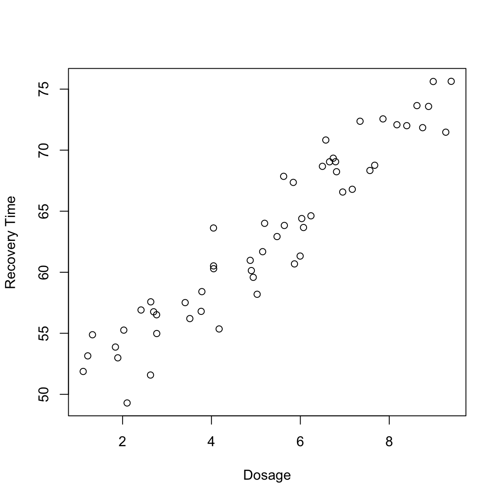\(R^2\): summary of the fitted model
TSS
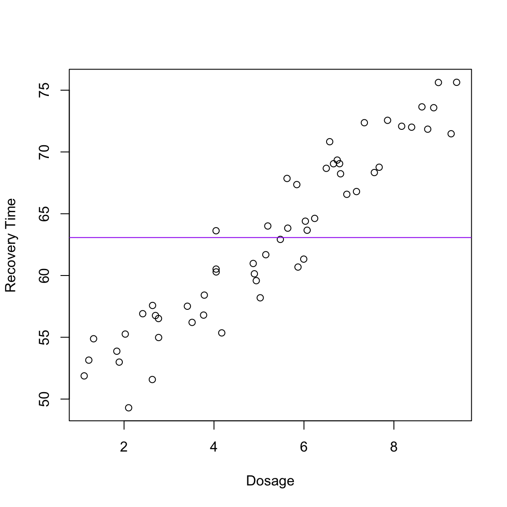\(R^2\): summary of the fitted model
TSS
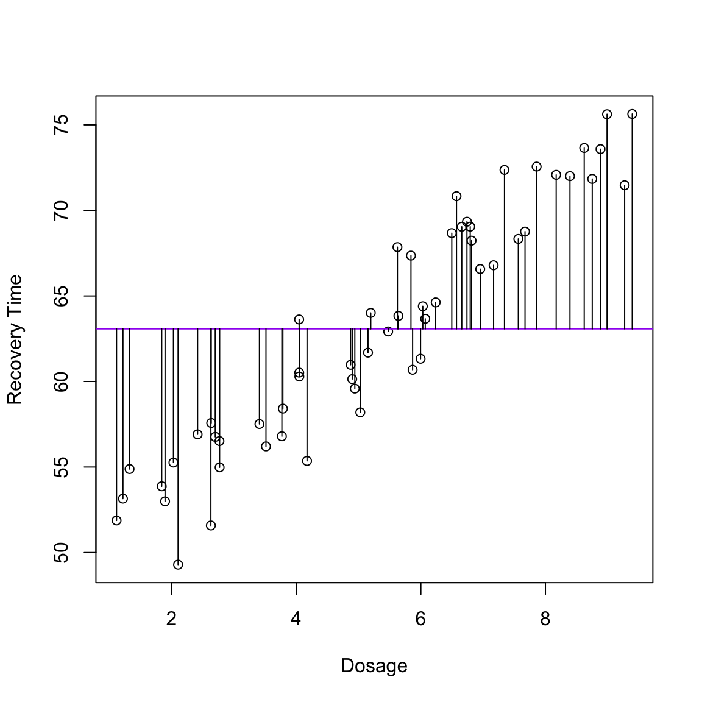\(R^2\): summary of the fitted model
RSS

\(R^2\): summary of the fitted model
RSS
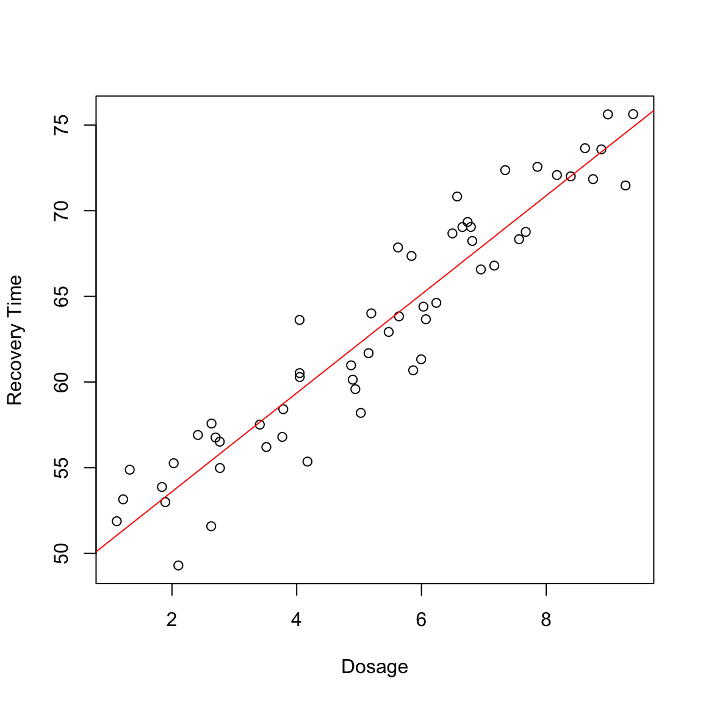\(R^2\): summary of the fitted model
RSS
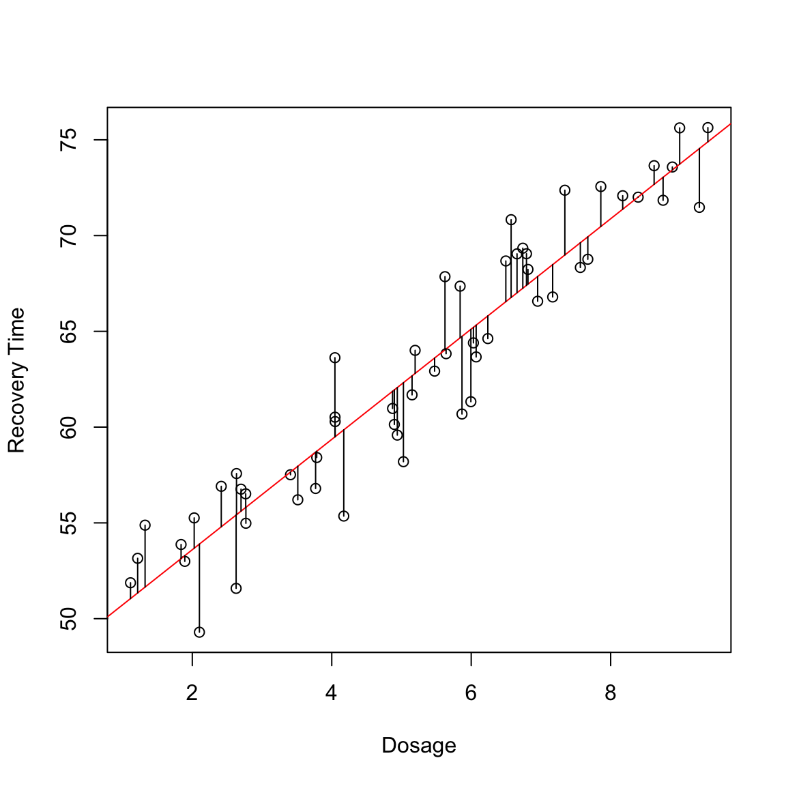\(R^2\): summary of the fitted model
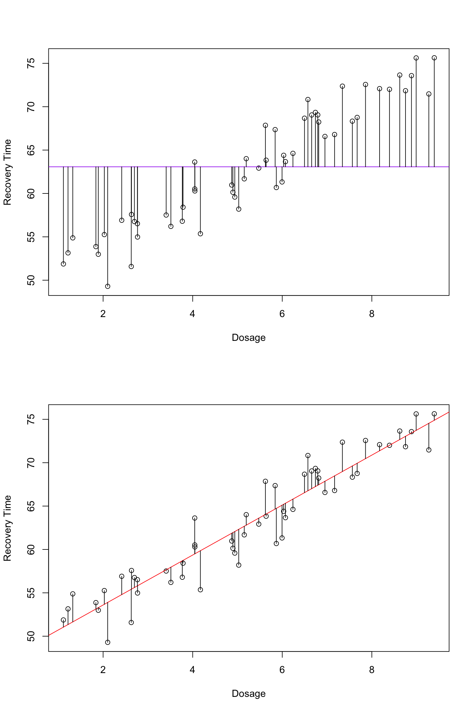
TSS, denoted Total corrected sum-of-squares is the residual sum-of-squares for Model 0 \[S(\hat{\beta_0}) = TSS = \sum_{i=1}^{n}(y_i - \bar{y})^2 = S_{yy}\] corresponding the to the sum of squared distances to the purple line
RSS, the residual sum-of-squares, is defined as: \[RSS = \displaystyle \sum_{i=1}^{n}(y_i - \{\hat{\beta_0} + \hat{\beta}_1x_{1i} + \dots + \hat{\beta}_px_{pi}\}) = \sum_{i=1}^{n}(y_i - \hat{y_i})^2\] and corresponds to the squared distances between the observed values \(y_i, \dots,y_n\) to fitted values \(\hat{y_1}, \dots \hat{y_n}\), i.e. distances to the red fitted line
\(R^2\): summary of the fitted model
Definition 2 (\(R^2\)) A simple but useful measure of model fit is given by \[R^2 = 1 - \frac{RSS}{TSS}\] where:
- RSS is the residual sum-of-squares for Model 1, the fitted model of interest
- TSS is the sum of squares of the null model
- \(R^2\) is also referred as coefficient of determination
- \(R^2\) is expressed on a scale, as a proportion between 0 and 1 of the total variation in the data.
\(R^2\) and correlation coefficient
Theorem 2 (\(R^2\)) In the case of simple linear regression:
Model 1: \(Y_i = \beta_0 + \beta_1x + \epsilon_i\) \[R^2 = r^2\] where:
- \(R^2\) is the coefficient of determination
- \(r^2\) is the sample correlation coefficient
\(R^2(adj)\)
- In the case of multiple linear regression we are using the adjusted version of \(R^2\) to assess the model fit as the number of explanatory variables increase, \(R^2\) also increases.
Theorem 3 (\(R^2(adj)\)) For any multiple linear regression \[Y_i = \beta_0 + \beta_1x_{1i} + \dots + \beta_{p-1}x_{(p-1)i} + \epsilon_i\] \(R^2(adj)\) is defined as \[R^2(adj) = 1-\frac{\frac{RSS}{n-p-1}}{\frac{TSS}{n-1}}\]
- \(p\) is the number of independent predictors, i.e. the number of variables in the model, excluding the constant and \(n\) is number of observations.
\(R^2(adj)\) can also be calculated from \(R^2\): \[R^2(adj) = 1 - (1-R^2)\frac{n-1}{n-p-1}\]
Checking model assumptions
The assumptions of a linear model
- Before making use of a fitted model for explanation or prediction, it is wise to check that the model provides an adequate description of the data.
- Informally we have been using box plots and scatter plots to look at the data.
- There are however formal assumptions that should be met when fitting linear models.
The assumptions of a linear model
Linearity:
- The relationship between \(X\) and \(Y\) is linear
Independence of errors
- \(Y\) is independent of errors, there is no relationship between the residuals and \(Y\)
Normality of errors
- The residuals must be approximately normally distributed
Equal variances
- The variance of the residuals is the same for all values of \(X\)
Checking assumptions
Residuals, \(\hat{\epsilon_i} = y_i - \hat{y_i}\) are the main ingredient to check model assumptions.
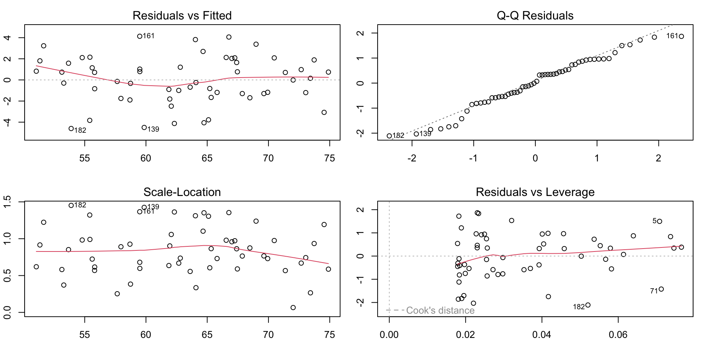
Checking assumptions
Residuals, \(\hat{\epsilon_i} = y_i - \hat{y_i}\) are the main ingredient to check model assumptions.
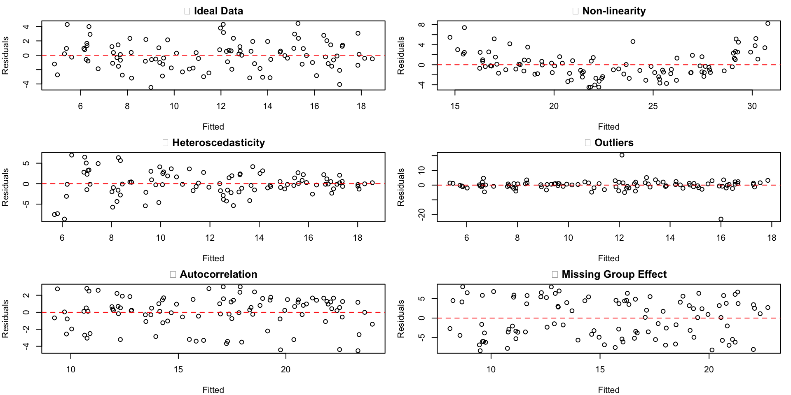
Evaluating linear models
Regression models can be evaluated by assessing a model fit or by directly evaluating the prediction error via using data splitting strategies.
Model fit
Adjusted R-squared \[R_{adj}^2=1-\frac{RSS}{TSS}\frac{n-1}{n-p-1}\]
Akaike information criterion (AIC) \[\text{AIC} = n \ln(\text{RSS}/n) + 2p\]
Bayesian information criterion (BIC) \[\text{BIC} = n \ln(\text{RSS}/n) + p \ln(n)\]
Prediction error
Mean Squared Error (MSE) \[MSE = \frac{1}{N}\sum_{i=1}^{N}({y_i}-\hat{y}_i)^2\] Root Mean Squared Error (RMSE) \[RMSE = \sqrt{\frac{1}{N}\sum_{i=1}^{N}({y_i}-\hat{y}_i)^2}\]
Mean Absolute Error (MAE) \[MAE = \frac{1}{N}\sum_{i=1}^{N}|{y_i}-\hat{y}_i|\]
FAQ
Is linear regression only for normally distributed data?
Short answer: No, not exactly.
What matters:
- The errors (residuals) should be approximately normally distributed, not the predictors or outcome.
- Normality is mainly needed for valid p-values and confidence intervals, not for estimating coefficients.
Can I use categorical variables in linear regression?
Yes.
R automatically converts categorical variables into dummy variables (0/1) behind the scenes.
Interpret carefully, especially with interactions!
Why is multicollinearity a problem?
Because it inflates standard errors, making it harder to tell which predictor matters.
Coefficients may still be accurate for prediction, but interpretation becomes unstable.
Is a low p-value always a sign of a good predictor?
No.
A variable can have a low p-value due to sample size, correlation with other variables, or data quirks.
Always combine p-values with effect size, context, and visual inspection.
Why residuals look curved. Is that a problem?
Yes. Curved residuals suggest non-linearity.
Try transforming variables or using models like polynomial regression, splines, or generalized additive models (GAMs).
Should I use \(R^2\) to compare models?
Not always.
- \(R^2\) always increases with more predictors. - Use adjusted R², AIC, or cross-validation for better model comparison.
Does significant interaction mean both main effects must be significant too?
No.
An interaction can be significant even if the main effects are not.
Interactions test if the effect of one variable depends on another, not their individual impact.
Can linear regression be used to fit a non-linear line?
Short answer: Yes and No.
You can transform your variables making them linear. Then in the original space,the fitted line will be non-linear. However the fitted line in the transformed space is still linear. Linear models assume a linear relationship between the outcome and predictors, meaning they fit a straight line (in 2D), a plane (in 3D), or a hyperplane in higher dimensions.
Exercises
Let’s practice in exercises fitting linear models, hypothesis testing and assessing model fit.
Feature selection
Group discussion
It is time to try to find the best model to explain BMI using diabetes data. Given from what we have learnt so far about linear regression models, how would you find the best model?
As a reminder, we have below variables in the data:
[1] "id" "chol" "stab.glu" "hdl" "ratio" "glyhb"
[7] "location" "age" "gender" "height" "weight" "frame"
[13] "bp.1s" "bp.1d" "bp.2s" "bp.2d" "waist" "hip"
[19] "time.ppn" "BMI" "obese" "diabetic"Feature selection
Definition
Feature selection is the process of selecting the most relevant and informative subset of features from a larger set of potential features in order to improve the performance and interpretability of a machine learning model.
There are generally three main groups of feature selection methods:
- Filter methods use statistical measures to score the features and select the most relevant ones, e.g. based on correlation coefficient. Computationally efficient but may overlook complex interactions between features.
- Wrapper methods use ML algorithm to evaluate the performance of different subsets of features, e.g. forward/backward feature selection. Computationally heavy.
- Embedded methods incorporate feature selection as part of the ML algorithm itself, e.g. regularized regression or Random Forest. These methods are computationally efficient and can be more accurate than filter methods.
Regularized regression
definition
- Regularized regression expands on the regression by adding a penalty term(s) to shrink the model coefficients of less important features towards zero.
- This can help to prevent overfitting and improve the accuracy of the predictive model.
- Depending on the penalty added, we talk about Ridge, Lasso or Elastic Nets regression.
Regularized regression
Ridge regression
- Previously we saw that the least squares fitting procedure estimates model coefficients \(\beta_0, \beta_1, \cdots, \beta_p\) using the values that minimize the residual sum of squares: \[RSS = \sum_{i=1}^{n} \left( y_i - \beta_0 - \sum_{j=1}^{p}\beta_jx_{ij} \right)^2\]
- In regularized regression the coefficients are estimated by minimizing slightly different quantity. Specifically, in Ridge regression we estimate \(\hat\beta^{L}\) that minimizes \[\sum_{i=1}^{n} \left( y_i - \beta_0 - \sum_{j=1}^{p}\beta_jx_{ij} \right)^2 + \lambda \sum_{j=1}^{p}\beta_j^2 = RSS + \lambda \sum_{j=1}^{p}\beta_j^2 \qquad(2)\]
where:
\(\lambda \ge 0\) is a tuning parameter to be determined separately e.g. via cross-validation
Regularized regression
Ridge regression
\[\sum_{i=1}^{n} \left( y_i - \beta_0 - \sum_{j=1}^{p}\beta_jx_{ij} \right)^2 + \lambda \sum_{j=1}^{p}\beta_j^2 = RSS + \lambda \sum_{j=1}^{p}\beta_j^2\]
Equation 2 trades two different criteria:
- lasso regression seeks coefficient estimates that fit the data well, by making RSS small
- however, the second term \(\lambda \sum_{j=1}^{p}\beta_j^2\), called shrinkage penalty is small when \(\beta_1, \cdots, \beta_p\) are close to zero, so it has the effect of shrinking the estimates of \(\beta_j\) towards zero.
- the tuning parameter \(\lambda\) controls the relative impact of these two terms on the regression coefficient estimates
- when \(\lambda = 0\), the penalty term has no effect
- as \(\lambda \rightarrow \infty\) the impact of the shrinkage penalty grows and the ridge regression coefficient estimates approach zero
Regularized regression
Ridge regression
Example of Ridge regression to model BMI using age, chol, hdl and glucose variables: model coefficients are plotted over a range of lambda values, showing how initially for small lambda values all variables are part of the model and how they gradually shrink towards zero for larger lambda values.
Bias-variance trade-off
Ridge regression’s advantages over least squares estimates stems from bias-variance trade-off
- The bias-variance trade-off describes the relationship between model complexity, prediction accuracy, and the ability of the model to generalize to new data.
- Bias refers to the error that is introduced by approximating a real-life problem with a simplified model
- e.g. a high bias model is one that makes overly simplistic assumptions about the underlying data, resulting in under-fitting and poor accuracy.
- Variance refers to the sensitivity of a model to fluctuations in the training data.
- e.g. a high variance model is one that is overly complex and captures noise in the training data, resulting in overfitting and poor generalization to new data.
Bias-variance trade-off
The goal of machine learning is to find a model with the right balance between bias and variance.
- The bias-variance trade-off can be visualized in terms of MSE, means squared error of the model. The MSE can be decomposed into: \[MSE(\hat\beta) := bias^2(\hat\beta) + Var(\hat\beta) + noise\]
- The irreducible error is the inherent noise in the data that cannot be reduced by any model
- The bias and variance terms can be reduced by choosing an appropriate model complexity.
- The trade-off lies in finding the right balance between bias and variance that minimizes the total MSE.
- In practice, this trade-off can be addressed by regularizing the model, selecting an appropriate model complexity, or by using ensemble methods that combine multiple models to reduce the variance.
Bias-variance trade-off

Figure 1: Squared bias, variance and test mean squared error for ridge regression predictions on a simulated data as a function of lambda demonstrating bias-variance trade-off. Based on Gareth James et. al, A Introduction to statistical learning
Ridge vs. Lasso
In Ridge regression we minimize: \[\sum_{i=1}^{n} \left( y_i - \beta_0 - \sum_{j=1}^{p}\beta_jx_{ij} \right)^2 + \lambda \sum_{j=1}^{p}\beta_j^2 = RSS + \lambda \sum_{j=1}^{p}\beta_j^2 \qquad(3)\] where \(\lambda \sum_{j=1}^{p}\beta_j^2\) is also known as L2 regularization element or \(l_2\) penalty
In Lasso regression, that is Least Absolute Shrinkage and Selection Operator regression we change penalty term to absolute value of the regression coefficients: \[\sum_{i=1}^{n} \left( y_i - \beta_0 - \sum_{j=1}^{p}\beta_jx_{ij} \right)^2 + \lambda \sum_{j=1}^{p}|\beta_j| = RSS + \lambda \sum_{j=1}^{p}|\beta_j| \qquad(4)\] where \(\lambda \sum_{j=1}^{p}|\beta_j|\) is also known as L1 regularization element or \(l_1\) penalty
Lasso regression was introduced to help model interpretation. With Ridge regression we improve model performance but unless \(\lambda = \infty\) all beta coefficients are non-zero, hence all variables remain in the model. By using \(l_1\) penalty we can force some of the coefficients estimates to be exactly equal to 0, hence perform variable selection
Ridge vs. Lasso
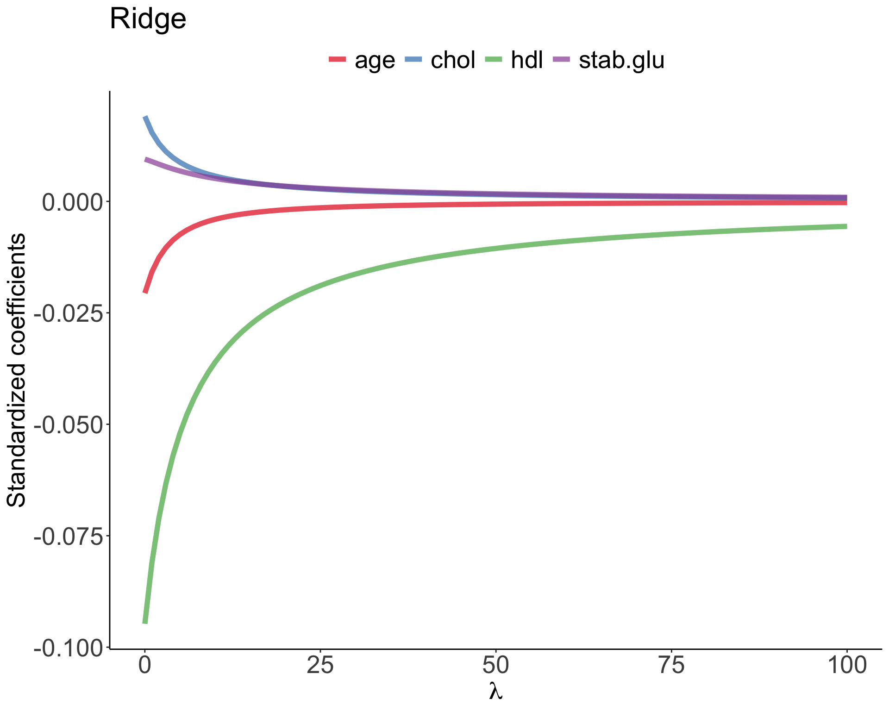
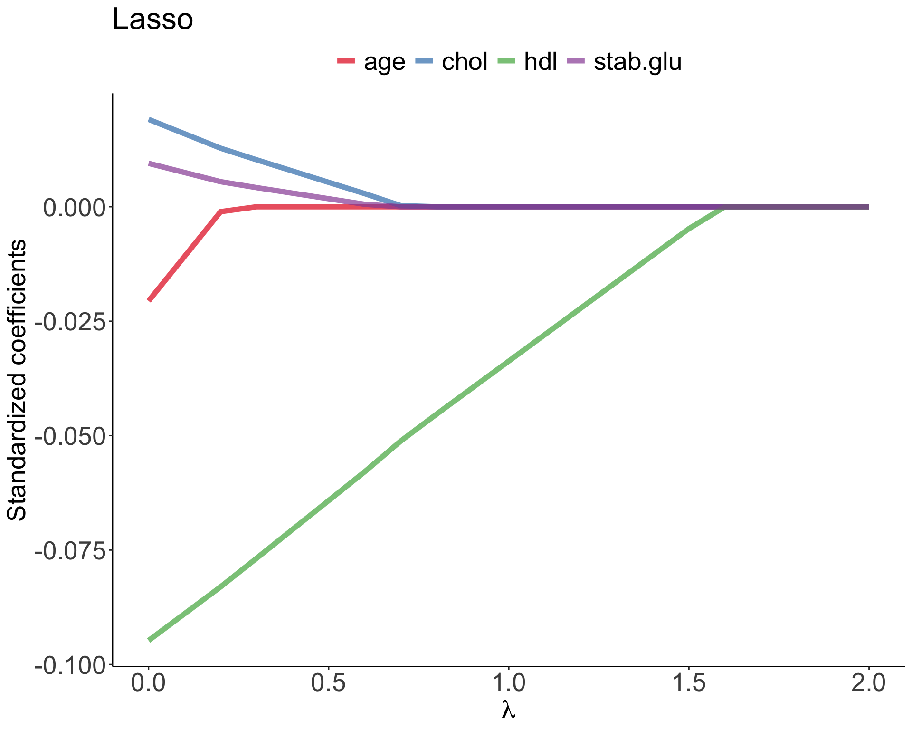
Elastic Net
Elastic Net use both L1 and L2 penalties to try to find middle grounds by performing parameter shrinkage and variable selection. \[\sum_{i=1}^{n} \left( y_i - \beta_0 - \sum_{j=1}^{p}\beta_jx_{ij} \right)^2 + \lambda \sum_{j=1}^{p}|\beta_j| + \lambda \sum_{j=1}^{p}\beta_j^2 = RSS + \lambda \sum_{j=1}^{p}|\beta_j| + \lambda \sum_{j=1}^{p}\beta_j^2 \qquad(5)\]
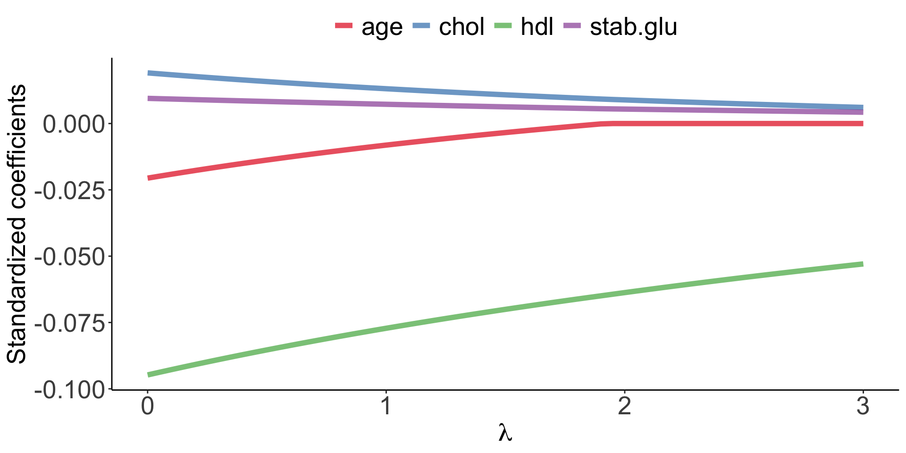Example of Elastic Net regression to model BMI using age, chol, hdl and glucose variables: model coefficients are plotted over a range of lambda values and alpha value 0.1, showing the changes of model coefficients as a function of lambda being somewhere between those for Ridge and Lasso regression.
Elastic Net
In R with glmnet
In the glmnet library we can fit Elastic Net by setting parameters \(\alpha\). Under the hood glmnet minimizes a cost function: \[\sum_{i_=1}^{n}(y_i-\hat y_i)^2 + \lambda \left ( (1-\alpha) \sum_{j=1}^{p}\beta_j^2 + \alpha \sum_{j=1}^{p}|\beta_j|\right )\] where:
- \(n\) is the number of samples
- \(p\) is the number of parameters
- \(\lambda\), \(\alpha\) hyperparameters control the shrinkage
When \(\alpha = 0\) this corresponds to Ridge regression and when \(\alpha=1\) this corresponds to Lasso regression. A value of \(0 < \alpha < 1\) gives us Elastic Net regularization, combining both L1 and L2 regularization terms.